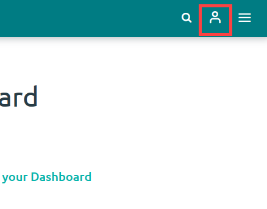
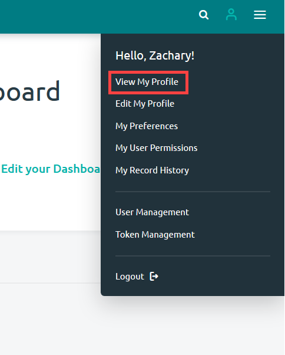
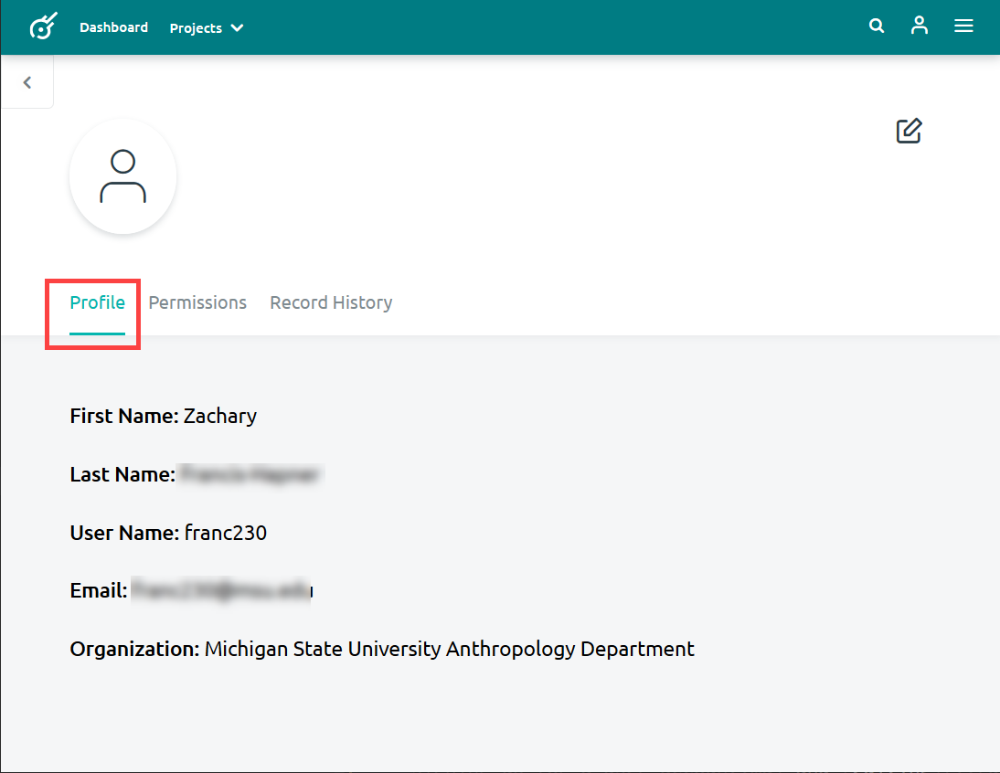
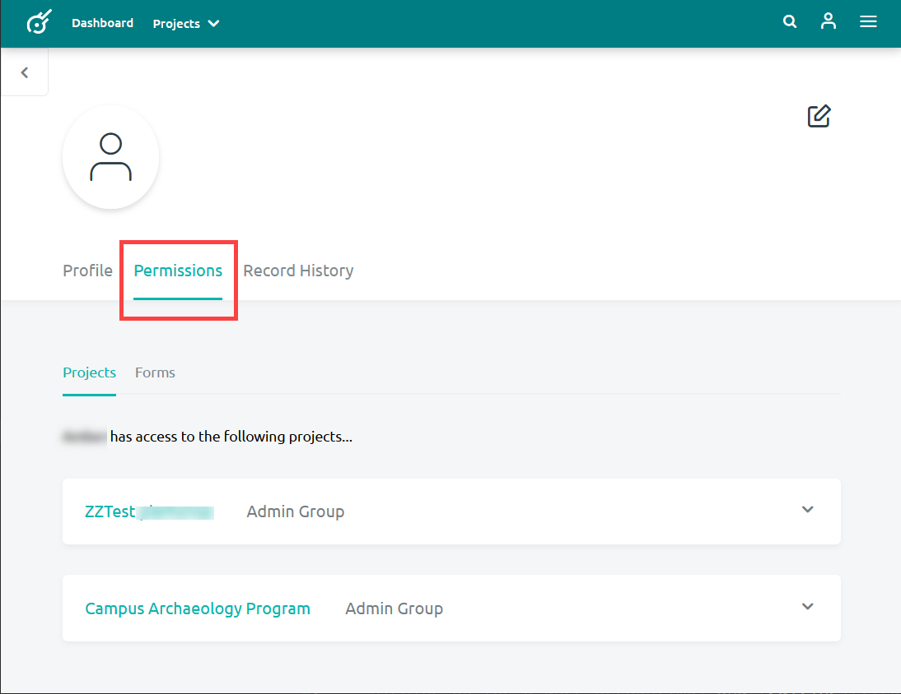
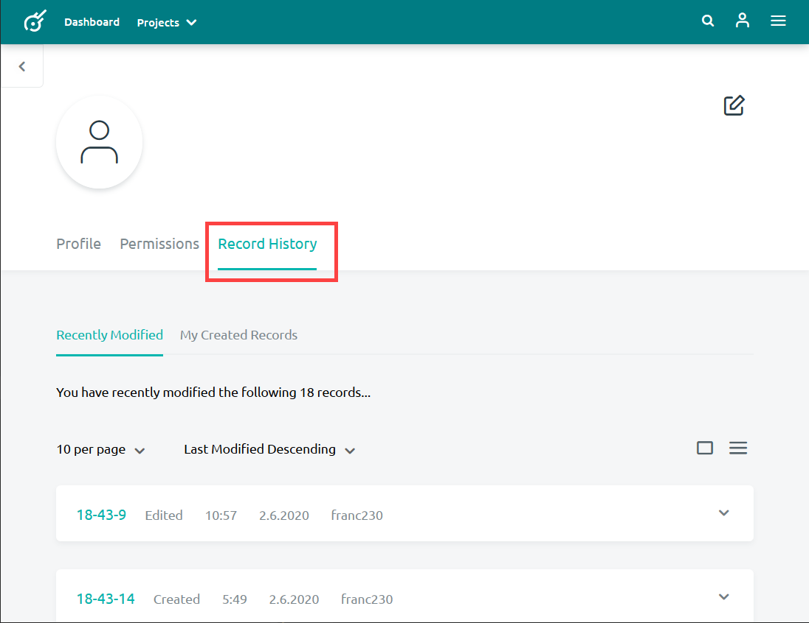

Viewing Your User Account
Every Kora user has a user account. Their user account contains profile information, permissions information and a record history that can be viewed by the users themselves and administrators. In order to view your user account information, follow these directions:
-
Click on the Person Icon at the top-right of the page in the navigation bar. 
-
Select View My Profile from the menu. 
This will bring you to your user account where you can view your profile information, permissions and record history.
Profile information
A user's profile information will contain all of the information entered into their profile when creating and editing that account. This includes first name, last name, username, email, and organization.

Permissions
The permissions section of your profile will display the project and form permissions that you have been granted within a Kora installation.

Record History
A user's record history displays recently modified records and records that they have created.
